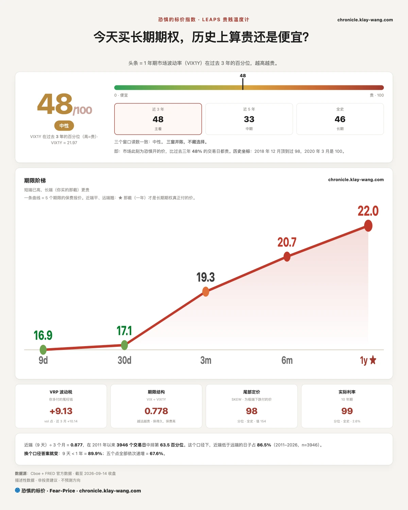
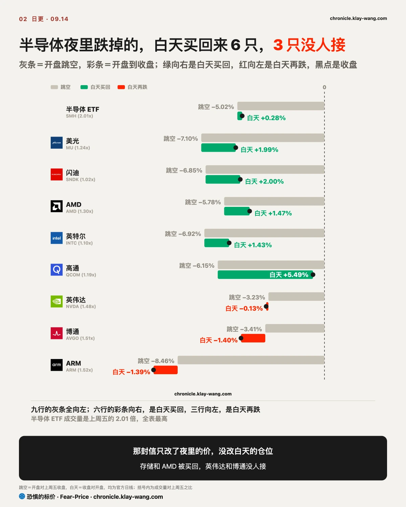
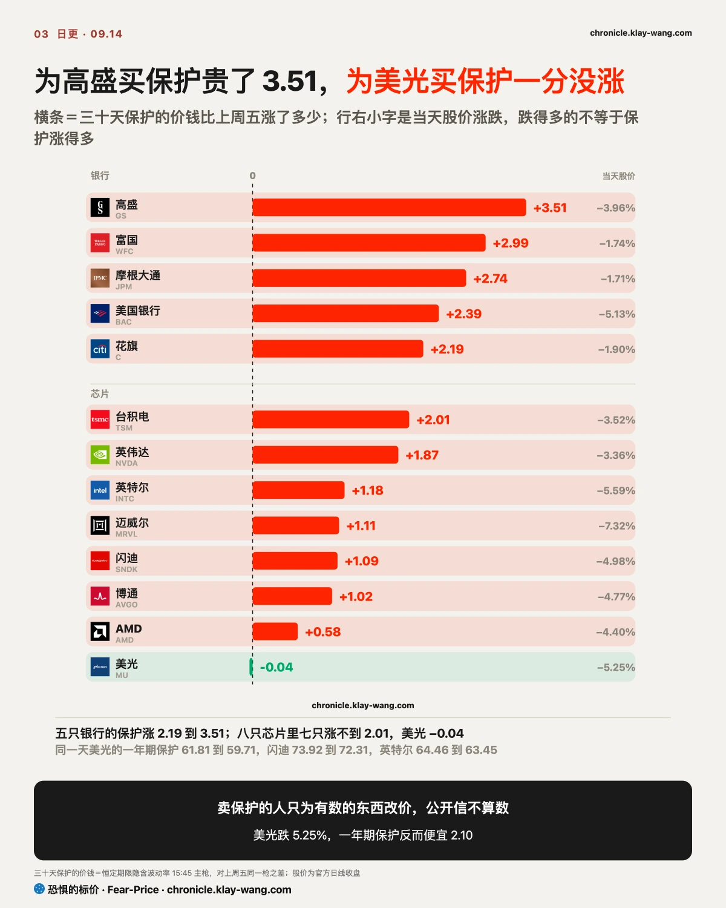
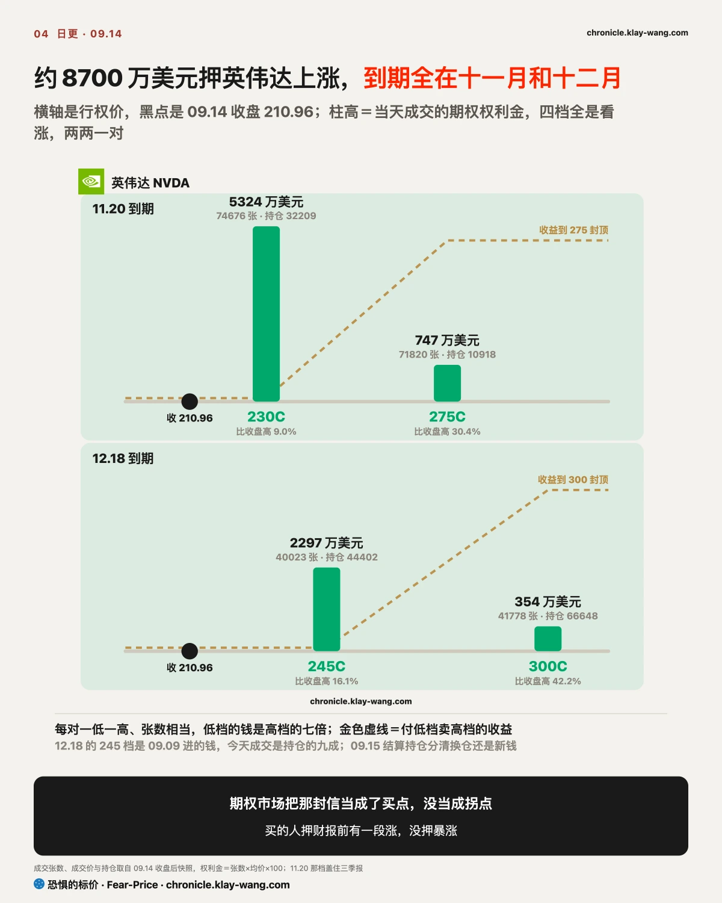
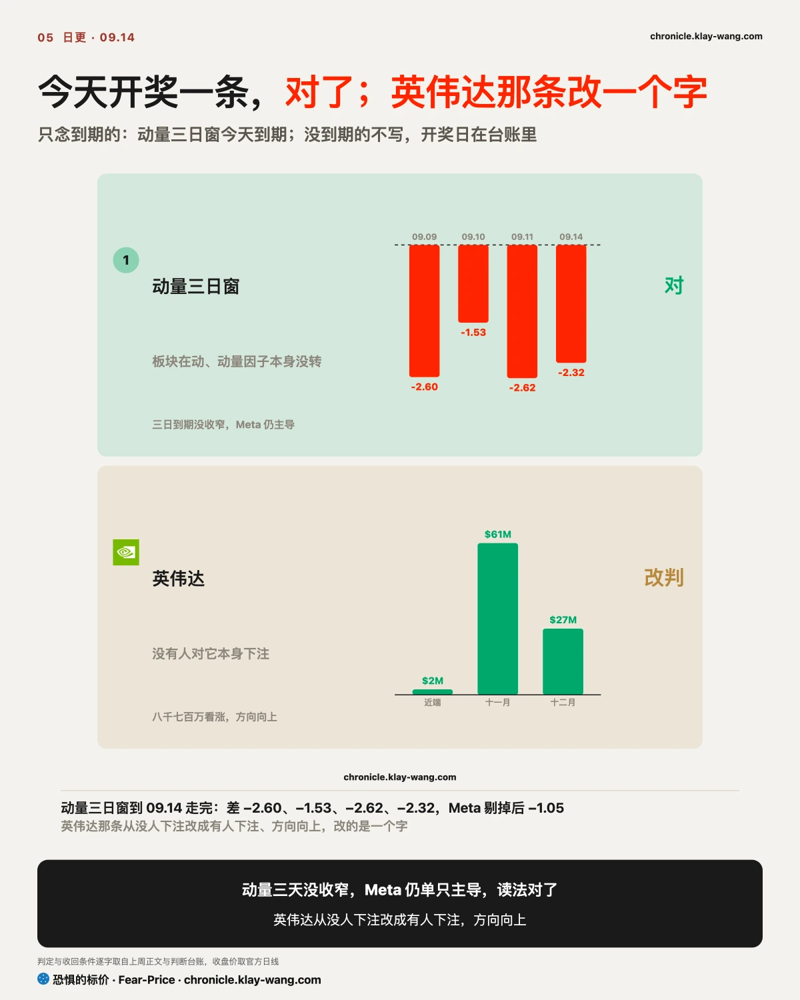

恐惧的标价指数（Fear-Price Index）· 2026-09-14 · 读数 47.5/100：一年期波动率 VIX1Y 为 21.97，处于近三年第 47.5 百分位，高即贵。逐日台账与口径 → chronicle.klay-wang.com · 转载注明：恐惧的标价指数 · Fear-Price
上周五 42.3，今天 47.5，回了 5.2 个分位。五档期限：九天 16.91、一个月 17.10、三个月 19.28、六个月 20.71、一年 21.97。九天那档比上周五涨 2.44，一年期只涨 0.22。
加回去的仍是 09.16 议息那一段，AI 那封信没有进到一年期里。为极端下跌买保护的价钱从 147.02 涨到 154.49，全史第 98.2 分位，这个位置说的是有人在为一次大跌付钱，没人为一次板块轮动付这种钱。为利率买保护的价钱（MOVE）从 82.21 涨到 83.90，近三年第 35.4 分位。
利率才是这一周的主角。十年期盘中 5.012%，收 4.960%；2023.10 那次碰到 5% 当天就退回 4.8，这次退得比那次少得多。美元 ETF 涨 0.35%，黄金跌 1.48%，白银跌 2.20%，铜跌 2.34%，新兴市场 ETF 跌 2.72% 是这一组里跌得最多的，这一组是美元和利率给的，和 AI 没有关系。

跌幅几乎全是开盘前给的，开盘之后反倒有人在买。半导体 ETF 跳空 −5.02%，收 −4.75%，中间六个多小时净涨 0.28%，成交量是上周五的 2.01 倍。美光跳空 −7.10%，白天涨回 1.99%，闪迪和 AMD 也一样，白天各涨回一到两个点。
被买回来的和没被买回来的分得很清楚。英特尔和高通白天涨了回来，英特尔跳空 −6.92% 后涨回 1.43%，高通跳空 −6.15% 后涨回 5.49%，两只都收在全天区间的上六成。英伟达、博通、ARM 没人接：英伟达白天再跌 0.13%，博通再跌 1.40%、收在区间最底 13%，ARM 收 −9.74%，三只成交量都在上周五的 1.5 倍上下。买内存和 CPU 的人回来了，买 GPU 的人没回来。
这份名单我不觉得是巧合。上周五《金融时报》报道，七月爆仓的 Situational Awareness 基金正在用全额付款的深度价外看涨重建仓位，标的就是 AMD、英特尔、SK 海力士、闪迪和 CoreWeave，野村算过那两天的期权权利金有 3.15 亿美元。今天这五只全部跳空 5.8% 到 8%，全部在白天收涨。刚花三亿多买看涨的人，周一这个价对他是打折，他手里的是全额付款的期权，跌下来也没有追加保证金这回事。
软件是同一封信的另一面。软件 ETF 涨 5.04%，ServiceNow 涨 7.40%，是当天涨得最多的一批。这批公司过去一年一直被当成会被 AI 替代的那一方，前沿模型放缓，对它们是喘口气。这种一头跌一头涨的切换，和上周五加息押注推到九成时的走法正好相反：上周五标普跳空 +0.91% 后白天 −0.06%，夜里的钱给消息定价、白天没人动；今天夜里的钱照样定价，白天却有人动了，动的方向是买回芯片。
白天买回的那批人不像散户。高盛大宗经纪的数据说，对冲基金过去 11 个交易日里 10 天净买美国科技股，两周买入速度在近五年第 97 百分位，半导体领衔。刚建完仓的人周一没有卖也没有追，说明信改的是价，仓位没动，这是今天最重要的一件事。明天开盘就能验：半导体 ETF 要是再跳空超过 2% 而白天没人接，今天的买回就只是空头回补，这一节作废。

卖保护的人今天真正改价的是银行，芯片跌得再多也没让他们改。为高盛买三十天保护的价钱从 32.27 涨到 35.78，富国、摩根大通、美国银行、花旗各涨 2.19 到 2.99，是全表涨得最多的五只。同一天美光股价跌 5.25%，为它买三十天保护的价钱从 58.18 到 58.14，等于没动；整个半导体 ETF 的三十天波动率指数也只从 34.86 到 35.05。
一年期看得更清楚，美光的一年期保护从 61.81 降到 59.71，便宜了 2.10，闪迪便宜 1.61，英特尔便宜 1.01。一家股价比上周五跌 5% 的公司，为它买一年保护反而便宜了，在卖保护的人眼里只有一种解释：他们没把那封信算进这几家未来一年的波动里。他们算进去的是银行的指引。
银行这边的起因很具体。美国银行 CEO 周一在巴克莱会议上说，三季度交易收入与去年同期持平，投行费用比去年的 20 亿美元至少降一成，美国银行当天跌 5.13%，是大行里跌得最多的。一句指引能让五家银行的保护一起涨价，一封公开信却没让芯片的保护涨价，差别在于前者有数、后者只有观点，卖保护的人只为有数的东西改价。金融 ETF 09.30 到期的 55 看跌成交 13624 张，是持仓的 3.4 倍，有人顺手为银行买了到月底的保护。
指数和利率的保护在议息前一起加价。标普三十天保护从 12.45 涨到 13.21，为利率买保护的价钱（MOVE）从 82.21 到 83.90。上周五写的推翻条件是标普三十天保护在 09.15 前回到 14 以上，今天 13.21，没到，上周五那条先留着。美光也给一个数：09.16 决议之后它的三十天保护要是抬过 62 而股价没反弹，那就是保护市场后知后觉补定价了那封信，这一节得改口。

英伟达期权里当天最大的钱押的是十一月和十二月的上涨，本周的下跌没人押。四档看涨合计约 8700 万美元，比上周五押今天到期的那批英伟达看涨大十倍以上。跌了三个点的那天有人往两三个月后的看涨里放八千七百万，我把它读成：期权市场把那封信当成了一个买点，没当成拐点。
近端几乎没人碰。09.25 到期的 220 看涨只成交 11708 张，约 220 万美元，不到 11.20 那档的两成；上周五押今天到期的 220 看涨有 60911 张，今天收 210.96，全部归零。钱集中在两个到期日、四档行权价：
这两对合约是同一种做法。同一个到期日，低一档张数多，高一档张数几乎一样多，高档的价钱只有低档的七分之一；低档成交是持仓的 2.3 倍，高档是 6.6 倍，平均每笔 350 张，散户下不出这种单。付低档的钱、用高档拿回一成多，赌的是 11.20 之前涨过 230，涨到 275 以上就不再多赚。买的人认为涨得到低档，没为高档付钱，这个分寸就是判断：财报前有一段涨，没有暴涨，而 11.20 这个到期日刚好盖住英伟达的三季报，前两年都在十一月下旬发布。也可以反过来读，275 和 300 是单独买的深度价外看涨，和野村上周在 AMD、闪迪上看到的同一路数，两种读法都向上，只差封不封顶。
12.18 的 245 看涨是 09.09 那天进的钱，09.10 这里写过它结算后持仓从 9924 增到 44402。今天它成交 40023 张，是持仓的九成，比同一天 300 看涨的 41778 张略少。要么是那批人趁跌把行权价往上挪，卖低档买高档，用今天便宜下来的价钱换一个更高的目标；要么是新钱进来开了一对新的。哪一种明早结算就分得清：低档持仓掉到两万张以下是换仓；十一月那档持仓增不到两万张，今天这七万多张就是当天来回的仓位维护，买点那句得收回。
同一天同一路数的还有两家：微软 11.20 到期的 535 和 605 看涨各成交一万七千张，是持仓的 9.9 倍和 14.2 倍；英特尔同一到期日的 130 看涨成交 29743 张，比收盘高 33.8%。三家到期日都在十一月财报季，押的都是财报那一周。放缓 AI 的信发出来第一天，最大的几笔钱都押在了 AI 硬件的财报上，这比任何评论都直接。钱不会为一封信改到期日，它只会改价钱，而今天连价钱都没怎么改。

动量三日窗是唯一今天到期的判断，对了；英伟达那条今天就得改。
动量三日窗。09.09 立的读法是板块内部在动、动量因子本身没转，收回条件是三日内 Meta 不再单只主导弱势组而动量差仍不收窄。三天的动量差：09.09 落后 2.60，09.10 落后 1.53，09.11 落后 2.62，今天落后 2.32，没有收窄；把 Meta 剔掉，今天只落后 1.05，Meta 仍是单只主导。三天到期，条件没触发，这条开奖算对。09.08 写的那句历史上动量见顶后很少一个月就重启，今天成立。
英伟达。上周的判断是没有人对它本身下注，跟指数走。今天它比上周五跌 3.36%，成交量 1.48 倍，三十天保护涨 1.87，远端八千七百万是看涨。判断改一个字：有人对它本身下注，方向向上。

不给操作建议，只把今天的价格换算成你能自己判断的东西。
手里有半导体的：今天的跌幅是夜里给的，白天存储和 AMD 被买回一到两个点，英伟达和博通没有。为美光买一年保护的价钱便宜了 2.10，卖保护的人没把那封信当成未来一年的事。要盯的是明天开盘那一下：再跳空还有人接，今天这个读法成立；再跳空没人接，就得改。
手里有银行股的：三十天保护涨得最多的五只全是银行，起因是美国银行的三季度指引，和那封信没关系。金融 ETF 到月底的看跌有人买，是持仓的 3.4 倍。周三议息之前，银行是唯一一个保护在按自己的消息定价的板块。
手里有软件股的：软件 ETF 涨 5.04%，涨的是喘口气，订单没有变。特朗普收盘后打电话给黄仁勋，说放缓是骗局，盘后软件回吐 0.3% 到 0.5%，芯片盘后涨 0.5% 到 1.1%，周一白天的切换到了晚上已经开始往回走。
手里有长债的：十年期盘中触及 5%，长债 ETF 收平；为利率买保护的价钱 83.90，比上周五又贵 1.69。Timiraos 09.11 写加息一旦开启很少只加一次，CPI 后市场把到明年六月的加息次数从两次抬到三次。周二有 130 亿美元的二十年期国债拍卖，09.16 议息，这一周长债的价钱由这两件事定，与 AI 无关。
什么都没拿在等进场点的：为极端下跌买保护的价钱在全史第 98.2 分位，为一年买保护的价钱在近三年第 47.5 分位。两个数放在一起，市场在为一次大跌付钱，没在为慢跌付钱。